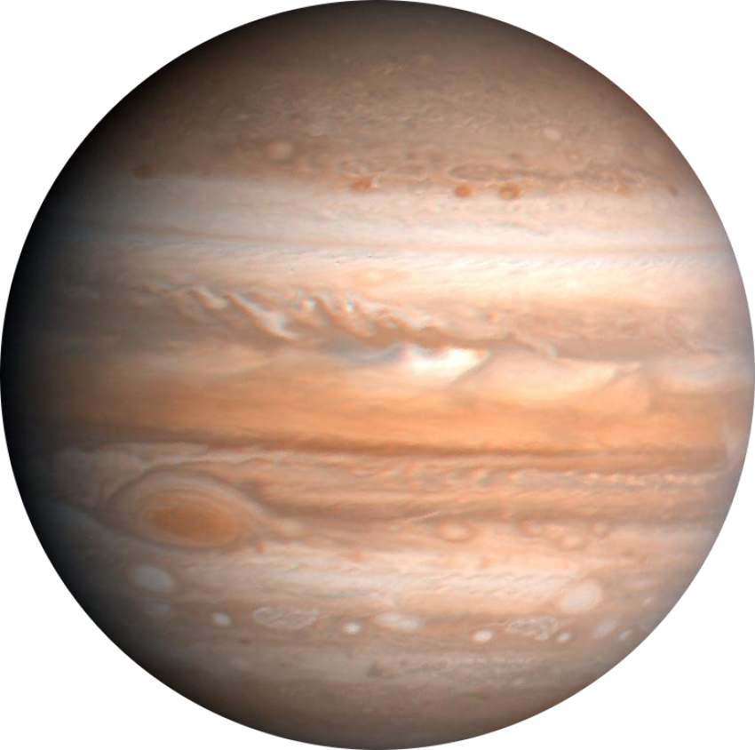

MORE FATCS TO KNOW
- Atmosphere:
Mars has a thin atmosphere composed mainly of carbon dioxide (about 95.3%), with trace amounts of nitrogen, argon, and other gases.
- Water on Mars:
There is evidence of liquid water in Mars' distant past, and it is believed that Mars once had rivers, lakes, and possibly an ocean.
- Future Exploration:
Mars continues to be a major focus of planetary science and exploration, with ongoing and planned missions to study its geology, climate, and potential habitability.
